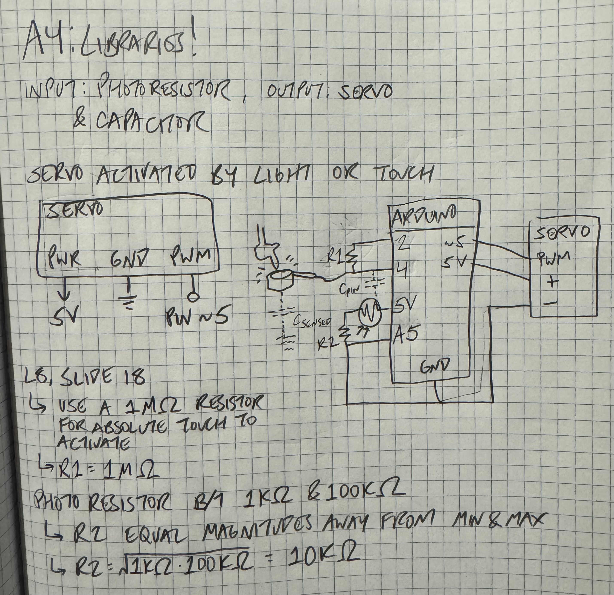
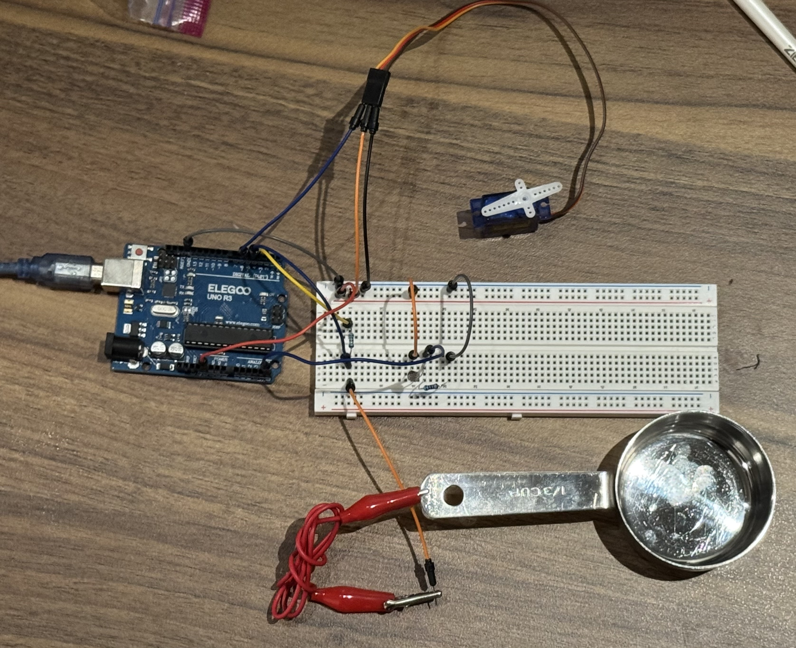
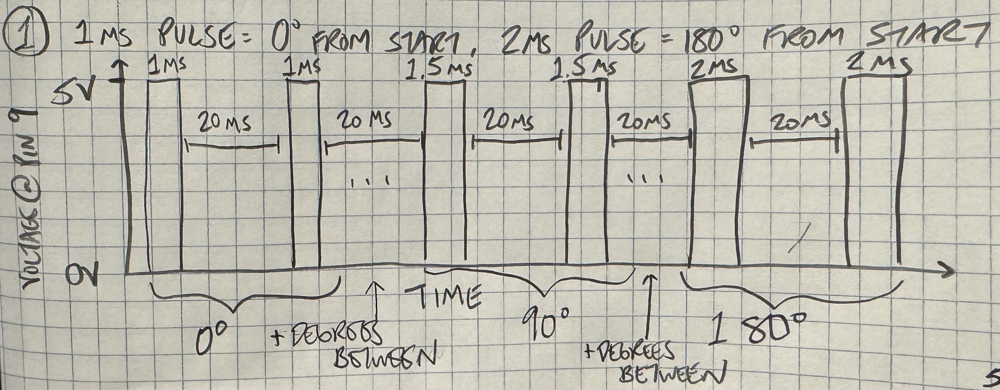

Home
Assignment 4: Libraries!
Planning
For my two inputs, I wanted to use a photoresistor and a capacitor.
For my output, I wanted to use a servo motor.
I planned to use the Servo and CapacitiveSensor libraries.
Schematic and calculations
I drew a schematic to visualize the circuit system.
To calculate the capacitor resistor value, I referenced Lesson 8.
On slide 18, we are instructed to use a 1MΩ resistor for absolute touch to activate the sensor.
To calculate the photoresistor resistor value, I did the same calculation that I did in A3.
"For the resistor next to the photoresistor (R_B), I used the photoresistor datasheet to see what range of resistances the photoresistor could achieve (R_A).
R_A's range was about 1KΩ to 100KΩ.
In accordance with the V_Out equation, R_B should be equal magnitudes away from R_A,
low and R_A, high. Therefore, I used the geometric mean to determine that a 10KΩ resistor
would be suitable for this circuit."
– Jordan of A3

Construction
I built my circuit using:
- My breadboard
- My Arduino UNO
- Wires
- A metal measuring cup
- A photoresistor
- A servo motor
- Alligator clips
- A 10KΩ resistor
- A 1MΩ resistor



Code
I then wrote the code so the motor would rotate back and forth if the photoresistor was shaded
or the measuring cup was touched.
#include <\Servo.h>
#include <\CapacitiveSensor.h>
// set up the Capacitive sensor with a send and recieve pin
CapacitiveSensor cs_s2_r4 = CapacitiveSensor(2,4); // first param is send, second is receive
Servo myservo; // create Servo object to control a servo
int pos = 0; // variable to store the servo position
// set up photoresistor sensor pin
const int photoSensorPin = A5; // pin that the sensor is attached to
// photoresistor variables
int photoSensor = 0; // the sensor value
int photoSensorMin = 0; // minimum sensor value
int onOffPhotoThreshold = 0; // threshold to switch based on light/darkness
// capacitor variables
int capSensor = 0; // capacitor sensor value
int capSensorMax = 0; // max capacitor sensor value
int onOffCapThreshold = 0; // threshold to switch based on touch
void setup() {
pinMode(photoSensorPin, INPUT); // set photoresistor input pin
cs_s2_r4.set_CS_AutocaL_Millis(0xFFFFFFFF); // turn off autocalibrate on channel 1 - just as an example
Serial.begin(9600); // begin Serial communication to print values
myservo.attach(5); // attaches the servo on pin 5 to the Servo object
// turn on LED to signal the start of the photo calibration period:
pinMode(LED_BUILTIN, OUTPUT);
digitalWrite(LED_BUILTIN, HIGH);
// calibrate during the first five seconds (cover and uncover to get measurements)
photoSensor = analogRead(photoSensorPin);
photoSensorMin = photoSensor;
while (millis() < 5000) {
photoSensor = analogRead(photoSensorPin);
// record the minimum sensor value
if (photoSensor < photoSensorMin) {
photoSensorMin = photoSensor;
}
}
// print values to serial monitor for recordkeeping
Serial.print("Max photo value: ");
Serial.println(photoSensorMin);
// set threshold for photoresistor to activate servo
onOffPhotoThreshold = photoSensorMin + 100;
Serial.print("On/off photo threshold: ");
Serial.println(onOffPhotoThreshold);
// signal the end of the photo calibration period
digitalWrite(LED_BUILTIN, LOW);
delay(1000);
// turn on LED to signal the start of the capacitor calibration period:
pinMode(LED_BUILTIN, OUTPUT);
digitalWrite(LED_BUILTIN, HIGH);
// calibrate during the first five seconds (touch metal to get high measurement)
while (millis() < 10000) {
capSensor = cs_s2_r4.capacitiveSensor(30); // call the function to get the capacitive sensor value with 30 samples
// record the maximum sensor value
if (capSensor > capSensorMax) {
capSensorMax = capSensor;
}
}
// print values to serial monitor for recordkeeping
Serial.print("Max capacitor value: ");
Serial.println(capSensorMax);
// set threshold for capacitor to activate servo
onOffCapThreshold = capSensorMax / 2;
Serial.print("On/off capacitor threshold: ");
Serial.println(onOffCapThreshold);
// signal the end of the calibration period
digitalWrite(LED_BUILTIN, LOW);
}
void loop() {
// continuously read from photoresistor
photoSensor = analogRead(photoSensorPin);
// continuously read from capacitor
capSensor = cs_s2_r4.capacitiveSensor(30); // call the function to get the capacitive sensor value with 30 samples
// if dark or touching capacitor, servo activates
if (photoSensor < onOffPhotoThreshold || capSensor > onOffCapThreshold) {
for (pos = 0; pos <= 180; pos += 1) { // goes from 0 deg to 180 deg in 1 deg steps
myservo.write(pos); // tell servo to go to position in variable 'pos'
delay(10); // waits 30 ms for the servo to reach the position
}
for (pos = 180; pos >= 0; pos -= 1) { // goes from 180 deg to 0 deg in 1 ged steps
myservo.write(pos); // tell servo to go to position in variable 'pos'
delay(10); // waits 30 ms for the servo to reach the position
}
}
}
Testing
I uploaded my code and took my servo for a spin!

Additional questions
1: Say you are using a servo motor you attach to pin 9. Draw a graph with the x-axis as time and the y-axis as voltage at pin 9 with respect to ground.

When the servo receives a 1ms pulse, it turns 0° from start. When it receives a 2ms pulse, it turns 180° from start.
Therefore, when turning from 0° to 180° (as in the code snippet), the servo will receive pulses ranging from 1ms to 2ms.
Since the servo is incrementing by 1° each loop, the pulse will increase in duration by 1/180th of a ms for each degree increase.
2: Your input device is slightly broken, leading it to give us an erroneous reading 1% of the time. How can we address this? Answer in (pseudo)code.
Referring to L8, slide 31, this sounds like data spikes, in which there is an "occasional read way different from others." To address them (remove the spikes), we are recommended to use a "median filter [or] limit range." We could use code-based methods to normalize the data and get rid of outliers. According to the Arduino forums, using the median filter library could be a good way to do so. More on median filters.
3: Your input device is slightly noisy, leading the measurement to randomly deviate from the true measurement up or down by 10%. How can we address this? Answer in (pseudo)code.
(Again referring to L8), this sounds like high frequency noise-- a "fuzzy signal [with] values around the same number but not exactly the same." To address this (smooth the data), we can use "smoothing [or] low-pass filtering." Smoothing uses a moving average. As described in the Arduino docs on smoothing analog data, you can write code that "sequentially stores 10 readings from your analog sensor into an arrays, one by one. With each new value, the sum of all the numbers is generated and divided, producing an average value which then be used to smooth outlying data."
4: Did you use AI tools in completing this assignment? If yes, please provide details on how/when, as well as a brief reflection. If you used an LLM, please 'share' your conversation and include it as part of your submission, or cite the prompt(s) you used and the output. If no, you can either leave this question blank, or provide other information if you'd like.
I did not use AI for this assignment.
Back to top
Home
Back to A3